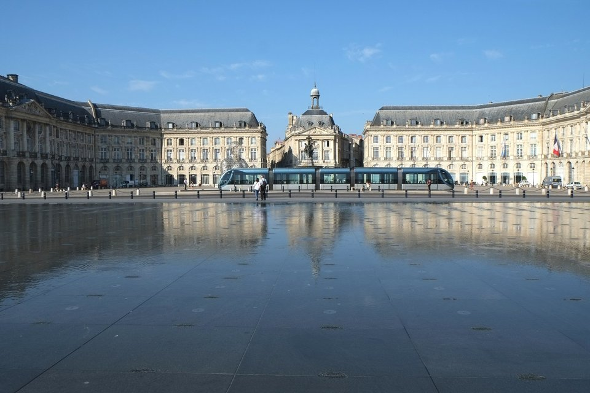

France · Bordeaux
Bordeaux audio guide
7 stops · 9 min · offline · plays as you arrive
The guide price is €1.99. This button is a placeholder. It does not open checkout and does not take payment. Email hello@getearwise.com.
A 7-stop offline audio guide to Bordeaux in Bordeaux, recorded in 10 languages and designed to play as you arrive. It covers Place de la Bourse and the water mirror, the stone riverfront, and the eighteenth-century golden triangle. Download once; you will not need a signal on the ground.
Stops
- 1
The Place de la Bourse
This part of the route looks at The Place de la Bourse.
- 2
The Fountain of the Three Graces
The next story is about The Fountain of the Three Graces.
- 3
The Water Mirror
Here the guide turns to The Water Mirror.
- 4
The Port of the Moon
A short story at this point covers The Port of the Moon.
- 5
The Grosse Cloche
This stop is given to The Grosse Cloche.
- 6
Saint-André Cathedral
Stand here for the story of Saint-André Cathedral.
- 7
The Cité du Vin
The narration at this pin is about The Cité du Vin.
On the map
All 7 stop pins for this guide are marked. Open map